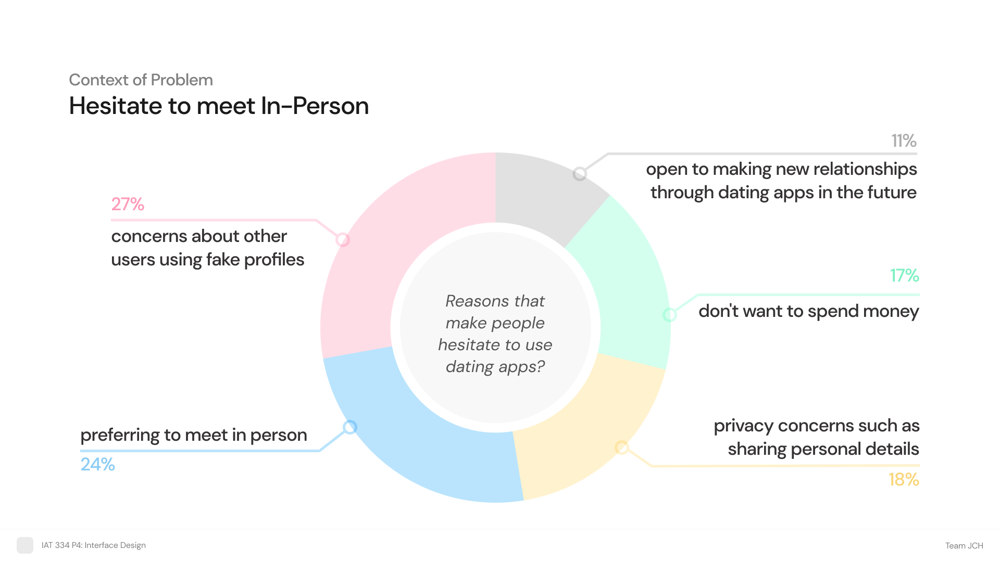
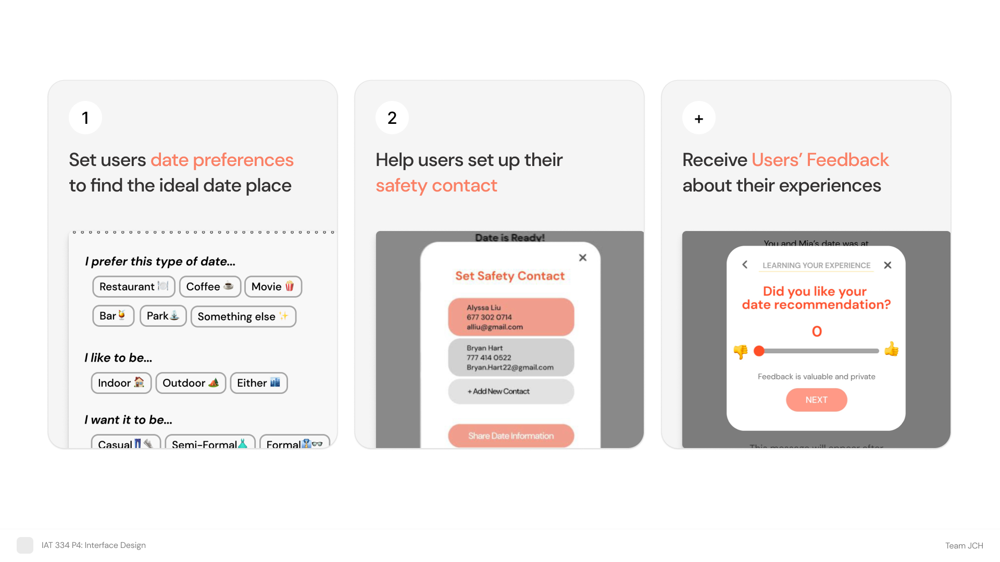
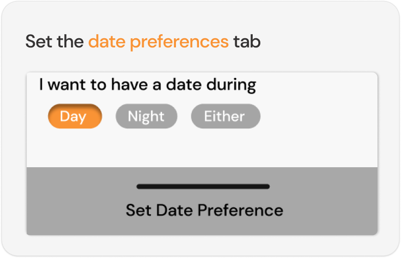
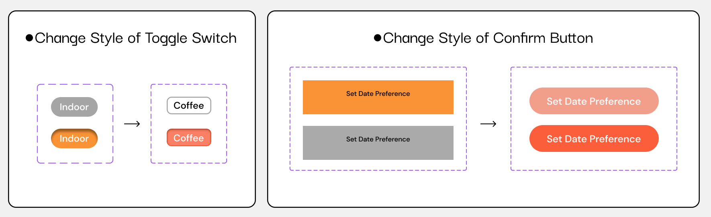
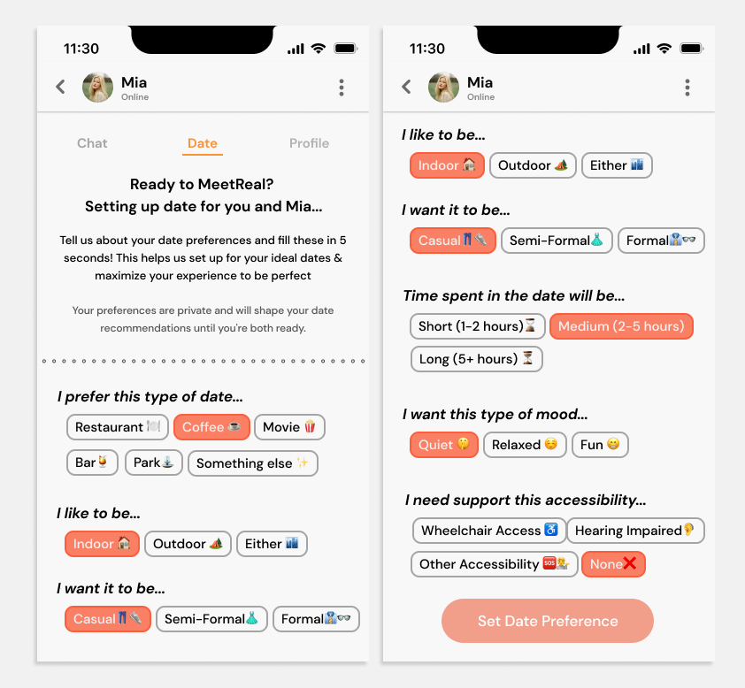
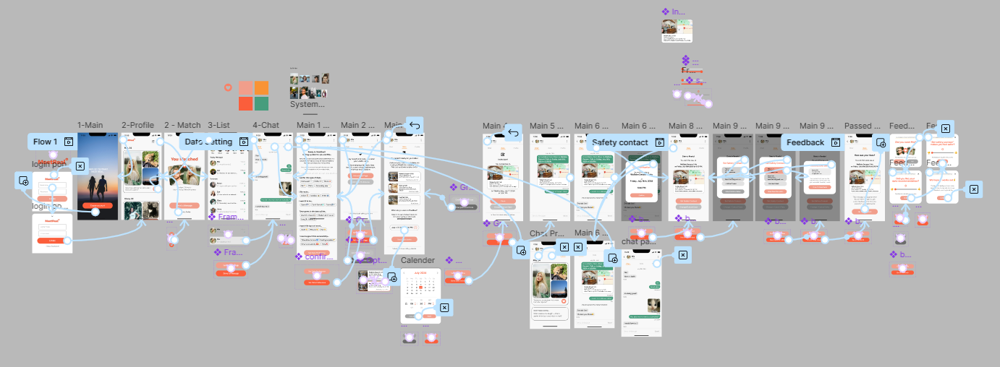

MeetReal
Date Setup Feature
Project Duration
June 2024 - August 2024 (6 weeks)

My Role
UI/UX Research, Interface Design
Overview
MeetReal is a dating app designed to bridge the gap between online matching and meaningful in-person connections. While many dating platforms focus on swiping and messaging, users often struggle to safely and confidently transition from digital conversations to real-life dates.
This project focused on designing a Date Setup feature, a system that helps users plan in-person dates more intentionally by aligning preferences, suggesting suitable locations, and addressing personal safety concerns. The goal was to reduce friction, increase confidence, and support healthier, more thoughtful dating experiences.
Context of Problem

The Gap Between Matching and Meeting
Although dating apps make it easy to connect online, many users hesitate when it comes time to meet in person. Through background research, we identified several contributing factors:
- Mismatched expectations for dates (time, mood, activity type)
- Difficulty agreeing on locations
- Safety concerns when meeting strangers in real life
Research on dating violence further highlighted these concerns, with surveys showing that nearly two-thirds of users experienced unwanted harm after meeting someone through a dating app. This emphasized the importance of designing not just for convenience, but for safety and trust.
Challenge
MeetReal needed a way to:
- Encourage real-life connections without increasing user anxiety
- Support safer in-person dating experiences
- Help users quickly find mutually agreeable date plans
The challenge was to design an interface that felt approachable and friendly, while also handling sensitive topics like safety and personal boundaries.
Solution

In order to solve the problems, MeetReal Date Setup includes three different features. First, it allows the users to set their date preferences to find the ideal date place. Secondly, it helps users set up their safety contact, and lastly, it receives users' feedback about their experiences.
I focused on...

I focused on one of the core functions of dating setup such as setting up the date preferences tab, its visual design of toggle buttons for setting the date preferences tab.
Redesign Analysis

Identified Issue
In the initial design, the toggle switches closely resembled the app’s primary action buttons. During critique, this was flagged as a usability issue, as users could mistakenly interpret the toggles as actions rather than state-based controls.
This confusion risked incorrect interactions, increased congnitive load, and reduced clarity within a critical setup flow.
Outcome

The re-design for setting the preferences tab was successful, leading to a better interface design as a result. Additionally, as emojis have been added, it could make the users understand what it means better and bring them a more friendly context. As the toggle switches differ from the main buttons, it does not break the heuristic principle of 'Recognition rather than recall' by its distinct style to help users identify their function. Also, keeping the original design for the confirm button at the bottom maintains the visual consistency across the app.
Prototype

Looking Back
This project reinforced the importance of designing from the user’s perspective, especially in emotionally sensitive contexts like dating and personal safety. Small visual distinctions can significantly impact how users interpret and interact with an interface. MeetReal demonstrated how thoughtful interaction design can encourage real-world connection while respecting user comfort and boundaries.